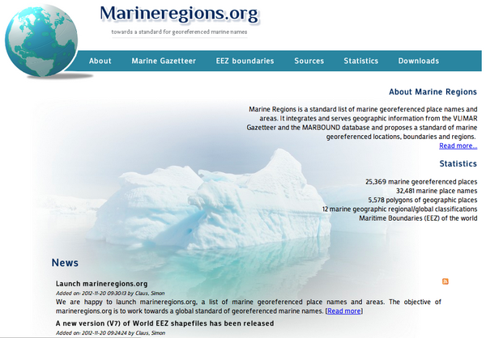
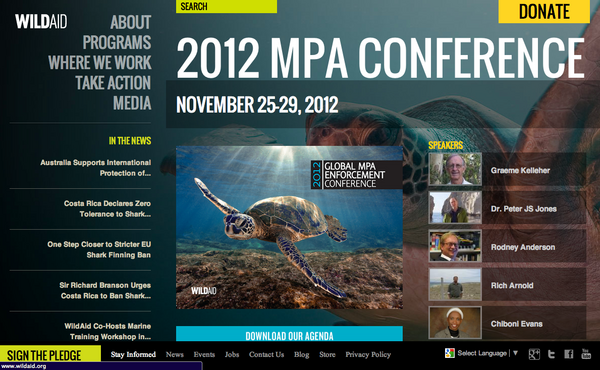
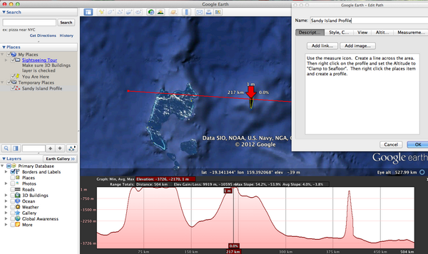
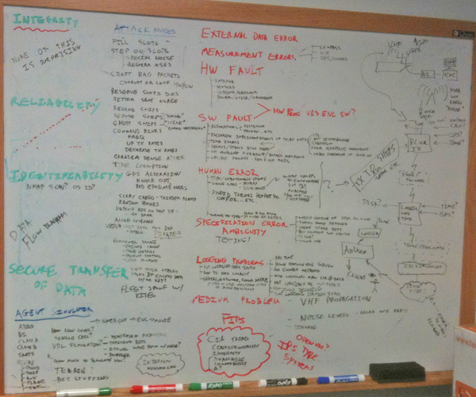

11.30.2012 13:37
Marineregions.org
Just heard about marineregions.org on RVTech this
morning.
There are lots of other sources for boundaries and names out there. Naming and bounds is a tough topic... http://en.wikipedia.org/wiki/List_of_territorial_disputes. And a reminder that you can add missing features to Google Maps via mapmaker.google.com
There are lots of other sources for boundaries and names out there. Naming and bounds is a tough topic... http://en.wikipedia.org/wiki/List_of_territorial_disputes. And a reminder that you can add missing features to Google Maps via mapmaker.google.com

11.30.2012 12:24
AIS ATON types 1 and 2 should not exist
I just want to share an opinion with
the world. AIS ATON Types 1 and 2 should never have existed. Please
do not buy them. Please do not make them. If you have them in
server, replace them.
Only AIS type 3 unites have a full 2 channel AIS receiver in them. If you use a type 1 or 2 unit, the system has to presume that it or something else has reserved the slot that it is going to transmit on and that everyone has a proper sense of time and slots. I would guess that the initial idea is that types 1 and 2 would be cheaper and possibly consume less power. If we only have type 3 units, manufacturers only have to produce 1/3 the variation of types. AIS receivers are cheap, low power mobile processors are cheap. The receive side of AIS uses only a small fraction of what it takes to transmit. And then units using reserved slots can actually check that the slot is being reserved for them. And if you want to not hear, you could always have an option in the embedded software to turn off the receiver. Or you could turn off just one of the AIS channels and go type 2. But, why would you want to do that?
Seriously, it's time nuke all the Type 1 and 2 ATON devices out there right now. If you are a manufacture, please do not sell them. Do it for the mariners. Do it for the engineers who have to suffer with AIS. Do it for the VDL.
Only AIS type 3 unites have a full 2 channel AIS receiver in them. If you use a type 1 or 2 unit, the system has to presume that it or something else has reserved the slot that it is going to transmit on and that everyone has a proper sense of time and slots. I would guess that the initial idea is that types 1 and 2 would be cheaper and possibly consume less power. If we only have type 3 units, manufacturers only have to produce 1/3 the variation of types. AIS receivers are cheap, low power mobile processors are cheap. The receive side of AIS uses only a small fraction of what it takes to transmit. And then units using reserved slots can actually check that the slot is being reserved for them. And if you want to not hear, you could always have an option in the embedded software to turn off the receiver. Or you could turn off just one of the AIS channels and go type 2. But, why would you want to do that?
Seriously, it's time nuke all the Type 1 and 2 ATON devices out there right now. If you are a manufacture, please do not sell them. Do it for the mariners. Do it for the engineers who have to suffer with AIS. Do it for the VDL.
11.27.2012 08:01
Wild Aid 2012 MPA Conference
Today, I will be up in San Francisco
at the WildAid 2012
Marine Protected Area (MPA) Conference. Jenifer and I will be
presenting in the morning session today.
The title is a little overly specific. If you are at the conference feel free to talk to me about anything you would like.

The title is a little overly specific. If you are at the conference feel free to talk to me about anything you would like.
Applying Google's free mapping technology to enforcement and how NOAA success- fully uses it to track fishing operations in Hawaii.The morning program:
TECHNOLOGY OVERVIEW - Oswaldo Rosero, WildAid SUSTAINABLE EQUIPMENT AND MAINTENANCE - Rich Arnold, Harkcon IMIS GLOBAL: MARINE SOFTWARE INTEGRATION - Ernie Batty, IMIS Global Limited ORBCOMM: AUTOMATED IDENTIFICATION SYSTEMS (AIS) - Andrew Loretta CLS: SATELLITE VESSEL MONITORING SYSTEMS (SVMS) - Michael Kelly, CLS America Inc. IMIS GLOBAL: CASE STUDIES - Ernie Batty, IMIS Global Limited GOOGLE OCEAN PROJECT - Jenifer Foulkes and Kurt Schwehr
11.25.2012 11:32
Sandy Island
This is in no way an official Google
statement.
Tons of people have been talking about Sandy Island. Is it real or is it some goof up. Why not dig in yourself? There is a lot of discussion on wikipedia. You have to look at the "Talk" page: http://en.wikipedia.org/wiki/Talk:Sandy_Island_(New_Caledonia). And I bet you can find discussion at places like the GMT mailing list and I will certainly hear from many at the AGU conference that is coming up in San Francisco next month.
Google has put all of the LandSat imagery up on EarthEngine and you can see what we have in Google Earth and Maps. In Earth, you can make a profile of the terrain / bathymetry. You just have to make sure that you select "Clamp to Sea Floor" in your profile. Maps makers are only as good as the data they use. Google uses bathymetry from a number of sources. This is a good time for you the citizen to tell your government to support global ocean mapping and to ensure that the collected data and resulting grids are released into the public domain for all to work with. That helps to ensure that the data has a chance to be used by the likes of Smith and Sandwell and other projects that work to create global or regional bathymetry/topography datasets.
Here is the KML for a profile line over the area, but I encourage everyone to make their own profile.
SandyIslandProfile.kml
There is what it looks like:
sandy-island-google-earth.png
Or install GMT and grab the latest global grid from David Sandwell's Topex site at Scripps Institution of Oceanography: http://topex.ucsd.edu/marine_topo/mar_topo.html
More sources of info:
http://blog.geogarage.com/2012/11/south-pacific-sandy-island-proven-not.html
http://googlemapsmania.blogspot.com/2012/11/the-man-responsible-for-googles-non.html
Walter Smith and Maria Seton discussing the data: Re: Sandy Island on the GMT Mailing list
Tons of people have been talking about Sandy Island. Is it real or is it some goof up. Why not dig in yourself? There is a lot of discussion on wikipedia. You have to look at the "Talk" page: http://en.wikipedia.org/wiki/Talk:Sandy_Island_(New_Caledonia). And I bet you can find discussion at places like the GMT mailing list and I will certainly hear from many at the AGU conference that is coming up in San Francisco next month.
Google has put all of the LandSat imagery up on EarthEngine and you can see what we have in Google Earth and Maps. In Earth, you can make a profile of the terrain / bathymetry. You just have to make sure that you select "Clamp to Sea Floor" in your profile. Maps makers are only as good as the data they use. Google uses bathymetry from a number of sources. This is a good time for you the citizen to tell your government to support global ocean mapping and to ensure that the collected data and resulting grids are released into the public domain for all to work with. That helps to ensure that the data has a chance to be used by the likes of Smith and Sandwell and other projects that work to create global or regional bathymetry/topography datasets.
Here is the KML for a profile line over the area, but I encourage everyone to make their own profile.
SandyIslandProfile.kml
There is what it looks like:
sandy-island-google-earth.png


Or install GMT and grab the latest global grid from David Sandwell's Topex site at Scripps Institution of Oceanography: http://topex.ucsd.edu/marine_topo/mar_topo.html
More sources of info:
http://blog.geogarage.com/2012/11/south-pacific-sandy-island-proven-not.html
http://googlemapsmania.blogspot.com/2012/11/the-man-responsible-for-googles-non.html
Walter Smith and Maria Seton discussing the data: Re: Sandy Island on the GMT Mailing list
11.18.2012 14:46
libais 0.13
Still trying to figure out some
packaging issues, but version 0.13 of libais is out. A long ways to
go before this code base becomes what it should be, but this point
release is a big checkpoint for me. I want to refactor out the
bitset decoding into an AisFactory class. This version sets the
stage with cleaner code that is easier to refactor. Now I just need
to get the GoogleTest C++ framework
and CMake sorted for this project. The team at Google that works on
GoogleTest recommended commiting a copy of gtest into libais to
make sure it is built with exactly the same C++ compiler and flags.
I need to reorganize the structure of libais so as to not make a
mess. Anyone have a recommendation for a project that has done this
really well? I found https://github.com/snikulov/google-test-examples
which seems to reasonably simple, but does not include the gtest
code.
http://pypi.python.org/pypi/libais/0.13
http://pypi.python.org/pypi/libais/0.13
- Switch to the Google C++ style guide and cpplint.py
- Lots of small bugs found in the code review process
- Message constructors now start as status = AIS_UNINITIALIZED and set to AIS_OK when decoding is done
- Switched to using initializers to call parent initializers in C++
- Removed a lot of duplicate and unused code. AIS_ERR_WRONG_MSG_TYPE removed. More still needs to be removed.
- Rewrote the C++ NMEA parsing functions: GetBody, GetNthField, GetPad and Split.
- Switch to using asserts for checks that imply coding errors within the library.
11.18.2012 12:08
AIS Security and Integrity
First, before you read this... AIS
actually does work amazingly well under normal conditions. The
world survived for several thousand years without AIS for ships.
But we can and should do better. We have many of these problems
elsewhere:
Jamming 4G cell [Bruce Schneier]: One Simple Trick Could Disable a City's 4G Phone Network [MIT Technology Review]
Back in 2006 when I first really started taking a look deep into AIS, I quickly realized that people were trying to use this system for things far from its original design goal of helping to reduce the changes of ships colliding by making it easier for ships to identify each other and to be able to know generally where a ship was even if radar did not detect the other ship. Post Septeber 2001, the US pushed hard for this technology to become a law-enforcement maritime domain awareness and legal tool. However, the specifications for AIS do not consider security and integrity of the system beyond anything other than friendly transceivers trying to share the spectrum and politely tell others who they are and where they are. There was zip for real authentication, encryption or protection from denial-of-service (DOS). I brought this up at the AIS06 conference (now called eNavigation). It took only a couple minutes to come up with simple and cheap mechanisms to create massive confusion from the small scale (project a ship location elsewhere) to massive global issues (commanding transceivers to random other channels or lauching ghost fleets).
I mentioned to the USCG that I'd like to write up the general issues with the hopes that we could address some of these issues as the specifications were updated. The response was direct and clear. The USCG representative said that writing such a document would be "career limiting". I'm no longer worried about my career in that way and many of the issues I mentioned have been brought up in public now. For example, Spain admitted to practicing ghost fleet generation to give their military an edge during operations. Not that their strategy is likely to work well as a deception as the opposing force is going to wonder why the attack force is broadcasting their location. The USCG actually did one of these things to real mariners by accidents. They commanded a number of unlucky ship AIS transceivers to switch marine channels on the US East Coast.
So I might as well get more of my list out there and get the discussion going. I'd like to dispelled some of the myths out there or at least get people arguing their points of view so that future iterations of AIS are more robust.
Eric Raymond (ESR) and I already started with our draft of Toils of AIS (text in asciidoc format), but that only gets to the aspects related to parsing AIS and why the specifications directly lead to increased software cost and number of bugs, which lead to less adoption and innovation in the use of AIS.
I spent about 2 hours back in April of 2011 on my white board trying to breakdown where the trouble spots are. I'm missing tons of the issues and it reflects my background (e.g. I do not know much about how the particular RF encoding impacts channel stability and direction finding).
Many of the problems that I've found are easy to solve. For example, trusting the time of the transmitters is not smart. Most AIS receiving devices have a GPS in them. If those devices logged time to the best precision possible, all sorts of issues go away and others tracked down. As it is, most receivers do not timestamp at all and those that do either log only to the nearest second or (worse yet) log the time the data was logged. For example, the USCG logged ORBCOM satellite data with the timestamp of when the data was bulk downloaded from the satellite. While that time is interesting, any really interesting processing needs to know when the signal hit the antenna.
I could go on a lot more and I hopefully will. But that's enough for now. You will find bits and pieces of this stuff strewn throughout my blog (e.g. my guess that they are using the windows time protocol inside the USCG classified network).
As a reader, you should take some of these ideas and think them through. A good experiment is think like a drug runner. How can you get some vessel into another country without raising suspicions? Is using blind spots in the receiving network, turning off your AIS transceiver, or fiddling with the settings going help or hurt your ability to avoid notice of that country's coast guard? Remember that you are running drugs as a long term business, so one time solutions do you little good. You are trying to achieve the maximum percentage of your illegal cargo getting through. Then turn around each of your ideas and try to devise how you would, as the coast guard, try to find those illegal cargos without hurting legal commerce and setting all mariners against you. Then iterate a couple of times. It can also help to take a couple people to play the role of each side with third team to evaluate both sides. I think most people will find some surprises, especially when it comes to the constraints of commerce and not pissing off the mariners who are playing by the rules. Also remember, just because you do not know how to build radios or write software and might think it is hard to do, it really is easy enough to purchase time from radio or software engineers.
20110429-ais-security-integrity.jpg
Jamming 4G cell [Bruce Schneier]: One Simple Trick Could Disable a City's 4G Phone Network [MIT Technology Review]
Back in 2006 when I first really started taking a look deep into AIS, I quickly realized that people were trying to use this system for things far from its original design goal of helping to reduce the changes of ships colliding by making it easier for ships to identify each other and to be able to know generally where a ship was even if radar did not detect the other ship. Post Septeber 2001, the US pushed hard for this technology to become a law-enforcement maritime domain awareness and legal tool. However, the specifications for AIS do not consider security and integrity of the system beyond anything other than friendly transceivers trying to share the spectrum and politely tell others who they are and where they are. There was zip for real authentication, encryption or protection from denial-of-service (DOS). I brought this up at the AIS06 conference (now called eNavigation). It took only a couple minutes to come up with simple and cheap mechanisms to create massive confusion from the small scale (project a ship location elsewhere) to massive global issues (commanding transceivers to random other channels or lauching ghost fleets).
I mentioned to the USCG that I'd like to write up the general issues with the hopes that we could address some of these issues as the specifications were updated. The response was direct and clear. The USCG representative said that writing such a document would be "career limiting". I'm no longer worried about my career in that way and many of the issues I mentioned have been brought up in public now. For example, Spain admitted to practicing ghost fleet generation to give their military an edge during operations. Not that their strategy is likely to work well as a deception as the opposing force is going to wonder why the attack force is broadcasting their location. The USCG actually did one of these things to real mariners by accidents. They commanded a number of unlucky ship AIS transceivers to switch marine channels on the US East Coast.
So I might as well get more of my list out there and get the discussion going. I'd like to dispelled some of the myths out there or at least get people arguing their points of view so that future iterations of AIS are more robust.
Eric Raymond (ESR) and I already started with our draft of Toils of AIS (text in asciidoc format), but that only gets to the aspects related to parsing AIS and why the specifications directly lead to increased software cost and number of bugs, which lead to less adoption and innovation in the use of AIS.
I spent about 2 hours back in April of 2011 on my white board trying to breakdown where the trouble spots are. I'm missing tons of the issues and it reflects my background (e.g. I do not know much about how the particular RF encoding impacts channel stability and direction finding).
Many of the problems that I've found are easy to solve. For example, trusting the time of the transmitters is not smart. Most AIS receiving devices have a GPS in them. If those devices logged time to the best precision possible, all sorts of issues go away and others tracked down. As it is, most receivers do not timestamp at all and those that do either log only to the nearest second or (worse yet) log the time the data was logged. For example, the USCG logged ORBCOM satellite data with the timestamp of when the data was bulk downloaded from the satellite. While that time is interesting, any really interesting processing needs to know when the signal hit the antenna.
I could go on a lot more and I hopefully will. But that's enough for now. You will find bits and pieces of this stuff strewn throughout my blog (e.g. my guess that they are using the windows time protocol inside the USCG classified network).
As a reader, you should take some of these ideas and think them through. A good experiment is think like a drug runner. How can you get some vessel into another country without raising suspicions? Is using blind spots in the receiving network, turning off your AIS transceiver, or fiddling with the settings going help or hurt your ability to avoid notice of that country's coast guard? Remember that you are running drugs as a long term business, so one time solutions do you little good. You are trying to achieve the maximum percentage of your illegal cargo getting through. Then turn around each of your ideas and try to devise how you would, as the coast guard, try to find those illegal cargos without hurting legal commerce and setting all mariners against you. Then iterate a couple of times. It can also help to take a couple people to play the role of each side with third team to evaluate both sides. I think most people will find some surprises, especially when it comes to the constraints of commerce and not pissing off the mariners who are playing by the rules. Also remember, just because you do not know how to build radios or write software and might think it is hard to do, it really is easy enough to purchase time from radio or software engineers.

20110429-ais-security-integrity.jpg

11.07.2012 10:29
Proposal for a hydrographic / sonar surveying wikibook
I said it before in a recent post.
Why are the basic references books on the order of $400? Why are
many basic specifications documents not free and open? For example,
I can't believe the ship noise measurement specifications (ASA
S12.64 PART 1) are paywalled. I once sat down with the IHO CAT
A requirements and so many of the requirements made little sense...
one that sticks in my mind: "Upload data on the internet." So what,
my students have to email me an attachment sometime during their
program? They probably were thinking something along the lines of
using ftp, but really? We need an open / collaborative text. And
where is our master list of CAT A programs? We need open
discussions about what skills rather than just which big commercial
package students need to be able to push the buttons for. I want my
former students who are at sea to be able to debug a system that is
giving them poor grids out of Caris/Hypack/mbsystem/etc (and this
could be from so many factors) and to even know how to realize that
the BAGs they are delivering to be archived are buggered. I love it
when I hear about people in the field solving problems and getting
on with collecting awesome data.
My contribution so far includes my 32 hour lecture series, but that doesn't even put a dent in the issue: research tools 2011. But, I'm missing so many key topics, it seriously pains me.
Perhaps wikibook based off of the topics in the IHO CAT A specifications document would be interesting to the community?
S-5_Ed_11.0.1_06May2011_Standards-Hydro.pdf:
Examples:
And I'll leave you with:
My contribution so far includes my 32 hour lecture series, but that doesn't even put a dent in the issue: research tools 2011. But, I'm missing so many key topics, it seriously pains me.
Perhaps wikibook based off of the topics in the IHO CAT A specifications document would be interesting to the community?
S-5_Ed_11.0.1_06May2011_Standards-Hydro.pdf:
Examples:
B2.4 Communication Tools and Internet PP Cat A and B: Explain the networking concepts underlying Internet and intranet communications. Describe the features, resources and security issues of the Internet. Conduct searches for specialized information using Internet tools. Cat A: Explain the different Internet access modes, and their bandwidths. Upload hydrographic information to a web page.So for uploading, can I just dump a bag on a random file share service? What are the writers of this looking for?
B2.5 Database and Information Systems FF Cat A and B: Define different types of database management systems, and explain the architecture, functions and operations provided by each. Cat A: Describe the development of an information system, built upon database management software. Explain the special requirements of geospatial information systems.What the heck do you mean by an information system? [begin snark] Oh yes... I fire up Apple's stickie notes program and cover my screen in them. I make it geospatial, by arranging the stickies in the shape of continents. [end snark]
B2.3 Programming PF Cat a and B: Describe software development procedures: statement of requirements, interface design, algorithm development, flowcharts and pseudo code. Define syntax, data types and structures, control structures, arrays, pointers, functions, and file processing procedures for a modern programming language, such as Visual Basic, Visual C++, or Java. Cat A: Write computer programs using a modern programming language, to solve practical problems.WTF? Because "Visual C++" is a language? Well, maybe Microsoft's compiler is that broken. And you are going to talk about pointers without writing code? I can teach programming for scientists without ever talking about pointers. Enter scipy/numpy/ipython. I'd rather talk about numerical stability with floating point numbers.
And I'll leave you with:
Operate common application software systems such as [an] internet browser.Really? Who writes this stuff?
11.06.2012 12:59
Talk tomorrow
Monica is giving a talk
tomorrow at UNH. It's not being broadcast, so you actually have to
show up to hear her talk.
Please bring your lunch and join us for this week's Brown Bag Seminar: Who: Monica Wolfson When: Thursday, Nov. 8th at 12:40 Where: James Hall, Room 254, Univ. of New Hampshire, Durham, NH. What: Seismic Behavior and Thermal Structure of Oceanic Transform Faults With an introduction by graduate student Lizz Huss. I hope to see you all on Thursday, Cheers, Margaret
11.05.2012 17:23
libais 0.12 released
libais 0.12 is out
The number of lines changed is huge, but much of this is trying to
get consistant style in the code.
- Fix bit count bugs in 8_1_14, 8_1_15, 8_1_27
- Rewrote nth_field. Added split and delimiters
- Folded in 366 header to ais.h
- Lots and lots of style cleanup
- Use std::foo, remove std:: from code
- Documentation for Msg 17
- Testing of Msg 20